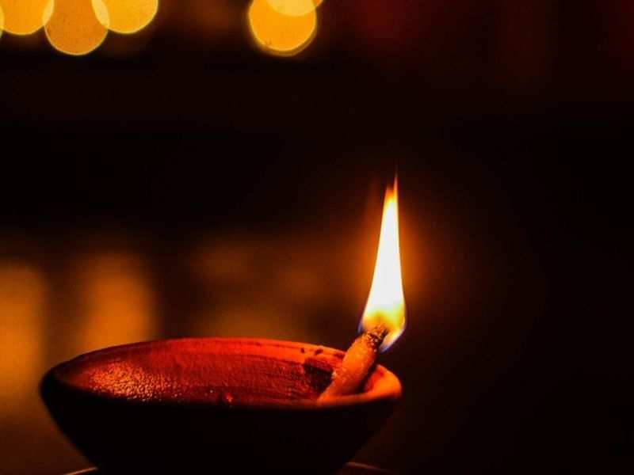

FESTIVALS AND CULTURE
Every festival in Hindu Culture has hidden reasons and scientific logics behind the festivals we celebrate. One of the biggest Hindu festival diwali we celebrated has a hidden science and logic. Lets have a look...

Diwali or what we often term it as the festival of light falls in October or November, and the festival is celebrated with much grandeur in north India s compared to the southern parts of India. October/November is a very weird season, especially if you look at the climate pattern. Its metamorphism from raining to humid and getting chilled at night exposes you to various kinds of virus and diseases, the most popular being the common cold.
It is because this perfect weather which is promoted by the low temperature and humid, the bacteria starts propagating. An ignited oil lamp, together with the chemicals evolved from the flame kills these bacterial populations. The effect gets multiplied to several thousand times when you light up hundreds of diyas around you.
Another interesting thing to note is that the light of the Diya superposes over the magnetic field around your superficial electromagnetic flux. The phenomenon activated your blood cells and the immunity provided by them makes you feel so energetic and full of life. That is why during Diwali homes are cleaned and hundreds of lamps are lit to ensure the atmosphere around is all safe.